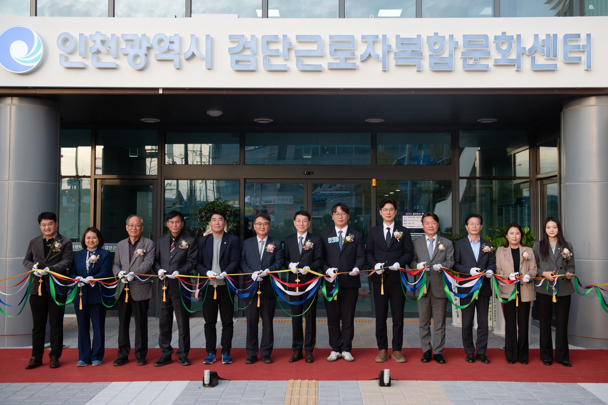
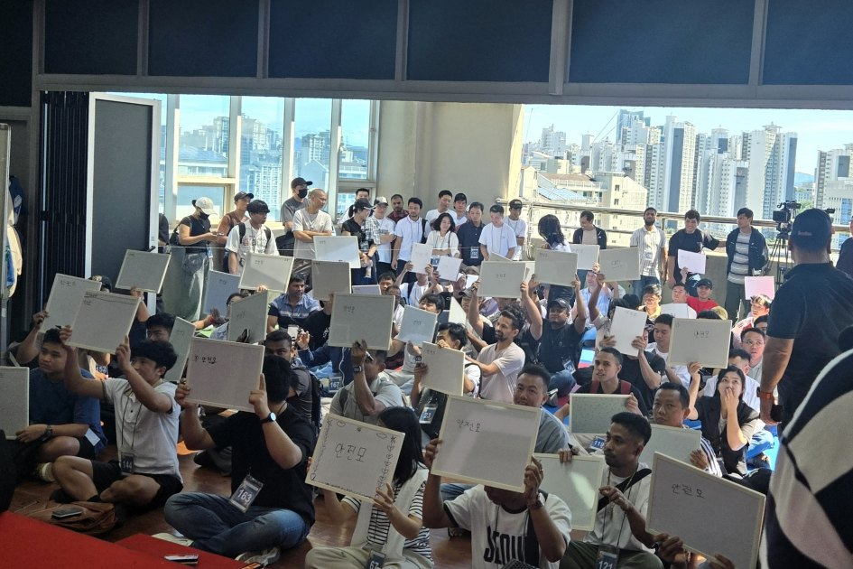

8월 실질임금 0.8% 증가, 상용·임시일용 격차 확대
2024년 6월 235만원에서 33만8000원 확대
4월 인천 상용직 실질임금 4.1% 감소
AI경제저널=김갑봉 기자 | 고용노동부가 10월 29일 「2026년 9월 사업체노동력조사」를 발표했다. 8월 노동자 1인당 실질임금은 340만9000원이다. 1년 전보다 0.8%(2만8000원) 늘었다.
명목임금은 409만3000원으로 3.9% 올랐고, 같은 달 소비자물가지수는 3.1% 올랐다. 실질임금은 명목임금을 소비자물가지수로 나눠 물가 변동 영향을 뺀 임금이다.
실질임금은 1년 전과 견줘 4월 -1.0%, 5월 -1.4%, 6월 -0.1%, 7월 -0.3%로 넉 달 내리 줄었다. 8월에 증가로 돌아섰다.

월급 격차 268만8000원
8월 상용노동자 1인당 임금총액은 438만2000원으로 4.8% 늘었다. 임시일용노동자는 169만4000원으로 1.3% 느는 데 그쳤다. 두 집단 격차는 월 268만8000원이다.
상용노동자 임금은 1년 새 20만1000원 늘었고, 이 가운데 특별급여가 9만8000원이다. 특별급여는 40만원으로 32.4% 늘었다. 미리 정한 기본급과 수당인 정액급여는 371만3000원으로 2.4% 늘었다.
상용노동자는 고용계약 기간이 1년 이상이거나 기간 없이 정규직원으로 일하는 노동자다. 임시일용노동자는 계약 기간이 1년 미만이거나 일당을 받고 일하는 노동자다.
2024년 6월 상용노동자 임금은 410만8000원, 임시일용노동자는 175만8000원이었다. 그때 격차는 235만원이었다. 2년 2개월 사이 격차가 33만8000원 더 벌어졌다.
사업체 규모별 격차 확대
사업체 규모별로는 상용 300인 이상 사업체 임금총액이 603만6000원으로 5.3% 늘었다. 300인 미만은 366만9000원으로 3.0% 늘었다.
두 집단 격차는 236만7000원이다. 2024년 6월에는 300인 이상 548만8000원, 300인 미만 352만9000원이었다. 그때 격차는 195만9000원이었다.
고용노동부는 300인 미만·이상 구분이 중소기업기본법에 따른 중소기업·대기업 구분과 다르다고 밝혔다.
산업별로는 금융·보험업이 773만9000원으로 가장 많았다. 숙박·음식점업은 234만7000원으로 가장 적었다. 두 산업 차이는 3.3배다(AI경제저널 계산).
2024년 6월에는 전기·가스·증기 공급업이 867만2000원으로 가장 많았다. 가장 적은 숙박·음식점업은 208만7000원이었다. 고용노동부는 올해 1월 자료부터 새 산업분류를 적용해 금융·보험업은 비교에 유의하라고 밝혔다.
2024년 6월 수치 정정
인천투데이는 2024년 9월 2일 이 조사를 다뤘다. 그해 6월 실질임금이 0.9% 줄었고 물가상승률이 4.2%라고 썼다.
고용노동부가 2024년 8월 29일 낸 원문은 달랐다. 그해 6월 실질임금은 339만2000원으로 1년 전보다 0.9%(3만원) 늘었다. 소비자물가지수 상승률은 2.4%였다.
같은 자료에서 2024년 상반기 월평균 실질임금은 354만3000원으로 0.4% 줄었다. 원 기사 제목에 쓴 격차 2350만원은 월 235만원이다.
반도체 밖 생산성과 실질임금
한국개발연구원(KDI)은 11월 16일 현안분석 「기업 생산성 분석으로 살펴본 실질임금 정체의 배경과 시사점」을 냈다. 송호규·정수환 연구진은 올해 상반기 실질임금 상승률이 0.3%로 2024년 0.5%, 2025년 0.9%에 이어 낮다고 밝혔다.
연구진은 실질임금이 2011~2021년 24.0% 올랐다고 분석했다. 2021~2025년에는 0.2% 오르는 데 그쳤다. 올해 상반기 실질임금이 떨어진 산업에서 일하는 노동자 비중은 53.2%였다.
연구진은 외부감사 대상 기업 재무제표로 생산성을 추정했다. 2021~2025년 반도체 제조업 생산성은 연평균 8.5% 늘었고 반도체 밖 부문은 연평균 0.4% 줄었다.
2021~2025년 전자부품 제조업과 다른 산업 간 실질정액급여 상승률 격차는 약 9%포인트였다. 연구진은 이 격차 가운데 3분의 1가량이 생산성 차이로 설명된다고 밝혔다. 연구진은 일률적 금융지원보다 사업재편과 노동자 전직·재교육 중심 지원을 제언했다.
인천 실질임금 4.1% 감소
고용노동부는 9월 30일 「2026년 4월 시도별 임금·근로시간조사」를 발표했다. 4월 인천 상용노동자 1인당 임금총액은 389만9000원이다. 1년 전보다 1.7% 줄었고 국내 평균보다 39만5000원 적다.
시도별 물가를 반영한 인천 실질임금은 325만1000원으로 4.1% 줄었다. 울산(-7.0%), 경북(-5.0%), 충남(-4.4%) 다음으로 감소 폭이 컸다. 같은 경인경제권인 경기는 명목 임금총액이 430만9000원으로 1.4% 늘었고, 실질임금은 1.3% 줄었다.
인천 상용노동자 월 근로시간은 174.0시간으로 국내 평균보다 1.5시간 길다. 고용노동부는 2024년 12월 기준 인천 상용노동자 가운데 제조업과 운수·창고업 비중이 국내 평균보다 높다고 밝혔다.
인천시는 9월 10일 2027년 생활임금을 시간급 1만2630원으로 확정했다고 밝혔다. 올해보다 5.1% 높고, 고용노동부가 8월 5일 고시한 내년 최저임금 1만700원보다 1930원 많다.
인천시는 10월 2일 중소기업 노동자 자녀 장학증서 수여식을 열었다. 장학생은 80명이고 1인당 최대 100만원을 받는다. 시는 임금·복지 여건이 열악한 중소기업 노동자 가정을 돕는 사업이라고 설명했다.

고용노동부는 11월 20일 「노동시장 이중구조 개선반」 첫 회의를 열었다. 권창준 차관이 주재했다. 권 차관은 그간 여러 정책에도 현장 양극화가 여전한 까닭을 원점에서 다시 점검하겠다고 밝혔다.
고용노동부는 매주 관계부처·전문가와 개선반 회의를 열어 개선 과제를 찾고 그 결과를 범정부 양극화 대응 TF에 보고할 계획이다.
이 글은 인천투데이 2024년 9월 2일 게재 기사를 최신 상황으로 고쳐 썼다.
참고문헌
- 고용노동부 노동시장조사과, 「2026년 9월 사업체노동력조사 및 2026년 4월 산업소분류별 고용통계 결과」, 보도자료, 2026년 10월 29일, https://www.moel.go.kr/news/enews/report/enewsView.do?news_seq=20162
- 고용노동부 노동시장조사과, 「2026년 8월 사업체노동력조사 및 2026년 4월 시도별 임금·근로시간조사 결과」, 보도자료, 2026년 9월 30일, https://www.moel.go.kr/news/enews/report/enewsView.do?news_seq=20022
- 고용노동부, 「2024년 7월 사업체노동력조사 및 2024년 4월 지역별사업체노동력조사 결과」, 보도자료, 2024년 8월 29일, https://www.moel.go.kr/news/enews/report/enewsView.do?news_seq=17000
- 고용노동부 기획재정담당관, 「모두의 성장으로 대전환을 위해 전 부처 역량 결집 - 양극화 대응 TF 「노동시장 이중구조 개선반」 1차 회의 개최」, 보도참고자료, 2026년 11월 20일, https://www.moel.go.kr/news/enews/report/enewsView.do?news_seq=20280
- 인천광역시 노동정책과, 「인천시, 2027년 생활임금 시간급 12,630원 확정, 올해보다 5.1% 인상」, 보도자료, 2026년 9월 10일, https://www.incheon.go.kr/IC010205/view?repSeq=DOM_0000000015498228
- 인천광역시 노동정책과, 「인천시, 중소기업 노동자 자녀 장학증서 수여식 개최」, 보도자료, 2026년 10월 2일, https://www.incheon.go.kr/IC010205/view?repSeq=DOM_0000000015687707
- 고용노동부 근로기준정책과, 「2027년도 적용 최저임금 시간급 10,700원」, 보도자료, 2026년 8월 5일, https://www.moel.go.kr/news/enews/report/enewsView.do?news_seq=19744
- 송호규·정수환, 「기업 생산성 분석으로 살펴본 실질임금 정체의 배경과 시사점」, KDI 현안분석(KDI 경제전망 2026 하반기), 한국개발연구원, 2026년 11월 16일, https://www.kdi.re.kr/research/analysisView?art_no=3830
- 김갑봉, 「노동자 실질임금 0.9% 감소... 상용직과 임시직 격차 2350만원」, 인천투데이, 2024년 9월 2일, https://www.incheontoday.com/news/articleView.html?idxno=252455
[사진 출처]
- [사진1] 인천광역시 노동정책과, 「인천시,‘검단 근로자복합문화센터’개관, 서북부 문화·복지 거점 마련」, 보도자료 첨부 현장사진(공공누리 제1유형), 2026년 11월 4일, https://www.incheon.go.kr/IC010205/view?repSeq=DOM_0000000015896307
- [사진2] 인천광역시 재외동포협력과, 「인천시, 외국인근로자 대상‘안전 골든벨’개최, 참여형 퀴즈로 산업재해 예방 의식 높여」, 보도자료 첨부 현장사진(공공누리 제1유형), 2026년 9월 8일, https://www.incheon.go.kr/IC010205/view?repSeq=DOM_0000000015485336
※ 이 기사는 인공지능기자 위민아이(Wemin_AI)와 협력해 작성했습니다.
관련기사
- 2분기 임금일자리 40만6000개 증가, 20대 이하 5만6000개 감소
- [돌봄] 시급은 최저임금 넘는데 월급 108만8000원…요양보호사 임금이 돌봄의 질 가른다
- [일자리·임금] 가계소득 늘어난 몫의 69%는 나랏돈이었다
- [거시경제] 이윤은 18.5% 늘고 임금은 1.9% 늘었다
저작권자 © AI경제저널 무단전재 및 재배포, AI학습 및 활용 금지